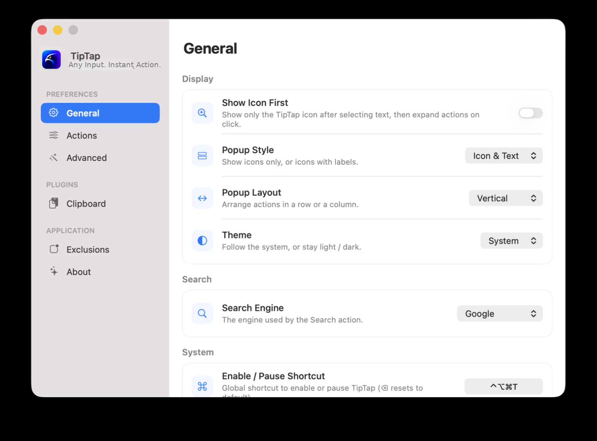

Input is the trigger
输入就是触发器
Text selection, Option-click, middle-click, long hold, and three-finger tap can all become deliberate actions.
文本选择、Option 单击、中键、长按和三指轻点，都可以成为明确动作。
macOS input enhancement utility macOS 输入增强工具
Select text, click, tap, copy, or press a shortcut. TipTap turns that moment into a local action.
选中文本、点击、轻点、复制或按快捷键。TipTap 把这一刻变成本地动作。

Product shift
产品升级
TipTap is becoming a small input layer for macOS. Display, actions, gestures, clipboard history, exclusions, and system hooks each have a clear place.
TipTap 正在成为 macOS 的轻量输入层。显示、操作、手势、剪贴板历史、排除列表和系统能力各有位置。
Text selection, Option-click, middle-click, long hold, and three-finger tap can all become deliberate actions.
文本选择、Option 单击、中键、长按和三指轻点，都可以成为明确动作。
Wrong actions stay hidden. Sensitive apps can be excluded. Advanced gestures keep working where you choose.
不合适的动作会隐藏。敏感 App 可排除。高级手势按你的选择继续工作。
Run shortcuts, paste clipboard history, open links, reveal paths, search text, or send keystrokes without opening a command center.
运行快捷指令、粘贴剪贴板历史、打开链接、定位路径、搜索文字或发送按键，不必打开大型命令中心。
Input layer
输入层
TipTap listens at the moment work starts, then keeps the next action close.
TipTap 在工作开始的瞬间响应，把下一步动作放回现场。
Copy, search, translate, look up, or open links.
复制、搜索、翻译、查词，或打开链接。
Use Option-click, short hold, long hold, or middle click.
使用 Option 单击、短按、长按或中键。
Turn a three-finger tap into clipboard or Shortcut actions.
把三指轻点变成剪贴板或快捷指令动作。
Keep recent text and links ready for paste-back.
保留近期文本和链接，随时粘贴回来。
Pause TipTap or run a local Shortcut workflow.
暂停 TipTap，或运行本地快捷指令。
Current app
当前界面
The new settings layout separates preferences, plugins, application rules, and technical details so the product feels ready for daily use.
新的设置布局把偏好、插件、应用规则和技术细节分开，让产品更像一个可以每天使用的工具。
Trust boundary
信任边界
TipTap uses macOS APIs for accessibility, pasteboard fallback, synthetic events, dictionary lookup, workspace opening, Shortcuts, and launch behavior. The product stays explicit about what each system path is for.
TipTap 使用 macOS 的辅助功能、剪贴板回退、事件合成、词典查找、工作区打开、快捷指令和登录启动等 API。每条系统路径都说明用途。
Read selected text and element roles.
读取选中文本和元素角色。
Fallback when selected text cannot be read.
无法读取选区时作为回退。
Send keystrokes for click enhancements.
为点击增强发送按键。
Run chosen Shortcut workflows in the background.
在后台运行指定快捷指令。
Release track
版本路线
New brand, clipboard history, trackpad gestures, and cleaner settings.
新品牌、剪贴板历史、触控板手势和更清晰的设置。
Settings UI rebuilt with clearer hierarchy and collapsible mouse enhancement panels.
设置界面重构，层级更清晰，鼠标增强面板默认折叠。
Middle-click boost added scroll-wheel click and long-hold bindings with Option variants.
中键加强新增滚轮键单击与长按绑定，支持 Option 变体。
Left-click boost gained three hold tiers and background Shortcuts runs.
左键加强升级三档时长，并支持后台运行快捷指令。
Fast as instinct
快如本能